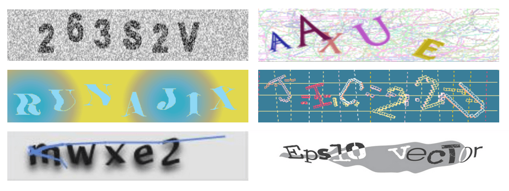

Text based captcha

pros of text based captcha
- Protects websites against bots by generating and grading texts that humans can pass but current computer programs cannot
- The complexity of words makes it more secure
- The current computers can not read the distorted text captcha
- Blur text provides extra security bots to spam registration forms
cons of text based captcha
- It contains more distortion
- Different orientation and noise make it difficult for humans also
- Text based Captcha can be cracked by using OCR softwares
- It is suffered by relay, random guess and dictionary attacks
Image based Captcha
pros of image based captcha
- more convenient and easier for humans
- These CAPTCHA tests are quick for legitimate users to solve
- more difficult for bots or computer programs to classify and solve
- image-based CAPTCHAs are a more secure alternative to text-based options
cons of image based captcha
- very hard for visually-impaired people to identify
- Requires both time and effort to complete For many users
- taking the time to decipher an image or solve a puzzle can be incredibly tedious
- Image recognition is hard problem
Audio based Captcha
pros of Audio based captcha
- it increases website usability.
- can also be used by visually imapaired people
- ensures sites are available to all users
- highly secured due to its distorted audio
cons of audio based captcha
- audio based CAPTCHA can also be challenging for humans to decipher audio
- the audio may be distorted or mixed with background noise makes it difficult for humans too.
- usually high time consuming in listening and solving
- challange for peoples who have hearing issues